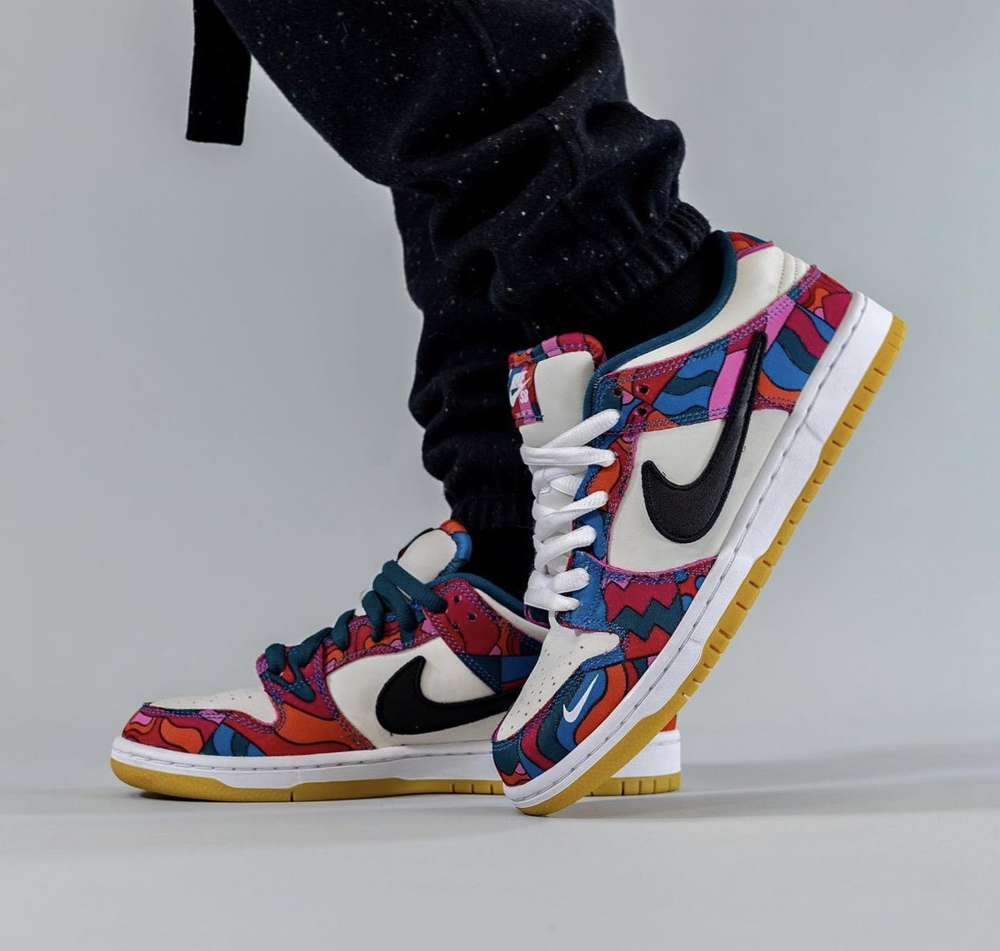
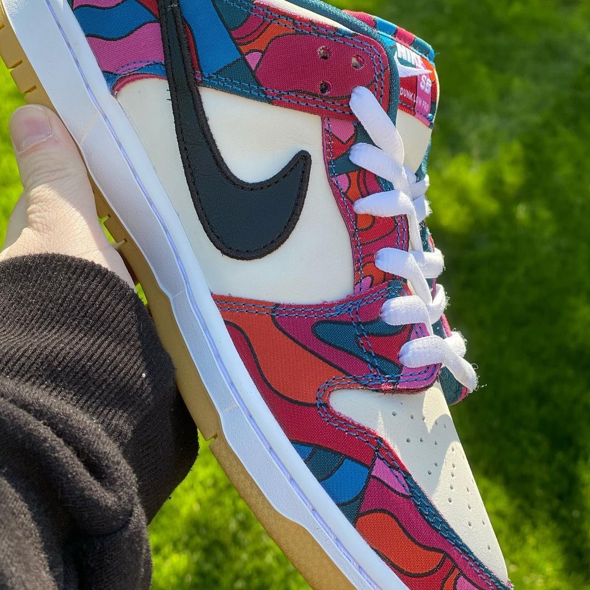

Из-за того, что летние соревнования по скейтбордингу были отложены, пришлось на время забыть о некоторых мечтах. Но это значит, что нашлось время для других. Изначально Parra планировал соединить в одном дизайне силуэт Nike SB Dunk Low Pro и эстетику форм национальных сборных, которые он разрабатывал на тот момент. Благодаря непредвиденной задержке у художника появилось больше времени на реализацию этой идеи и возможность дать новую ветвь развития своему дизайну в фирменных оттенках и стиле. В качестве холста для своих абстрактных ярких сюжетов Parra выбрал классические белые Dunk Low. В них волнистые геометрические узоры и вихрь цветов сочетаются в причудливых акцентах. Дизайн подчеркивает минималистичный белый фон, логотип Swoosh черного цвета и полностью покрытые рисунком стельки. Эта версия Nike SB Parra Dunk Low Pro воплощает в себе силу воображения.
 